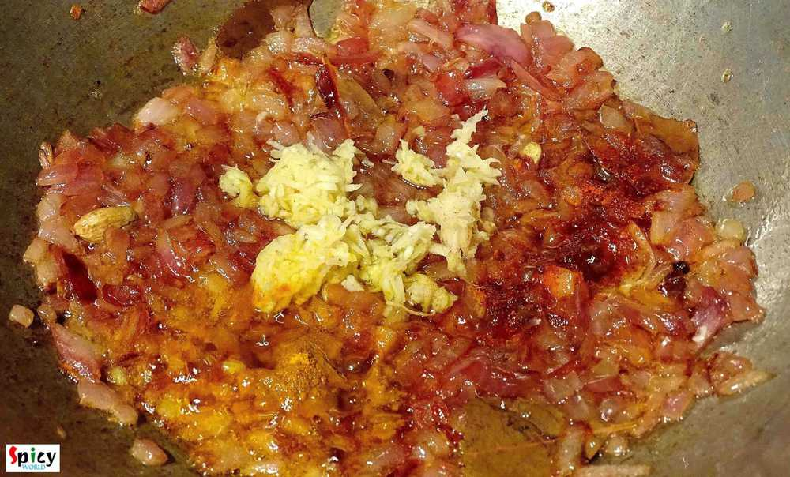
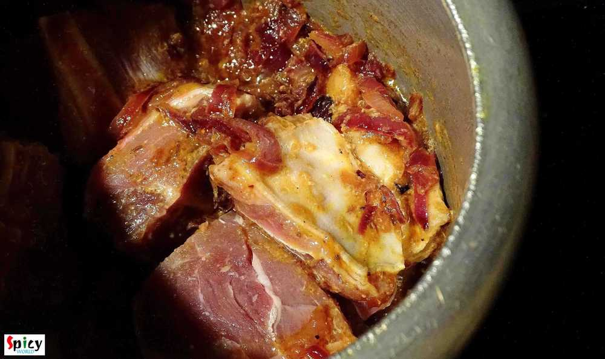
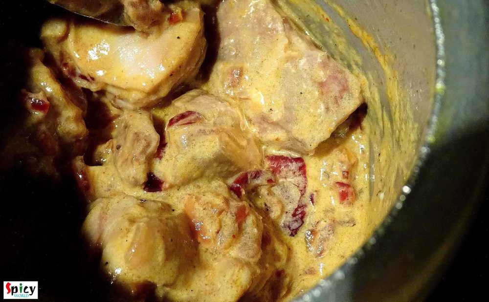
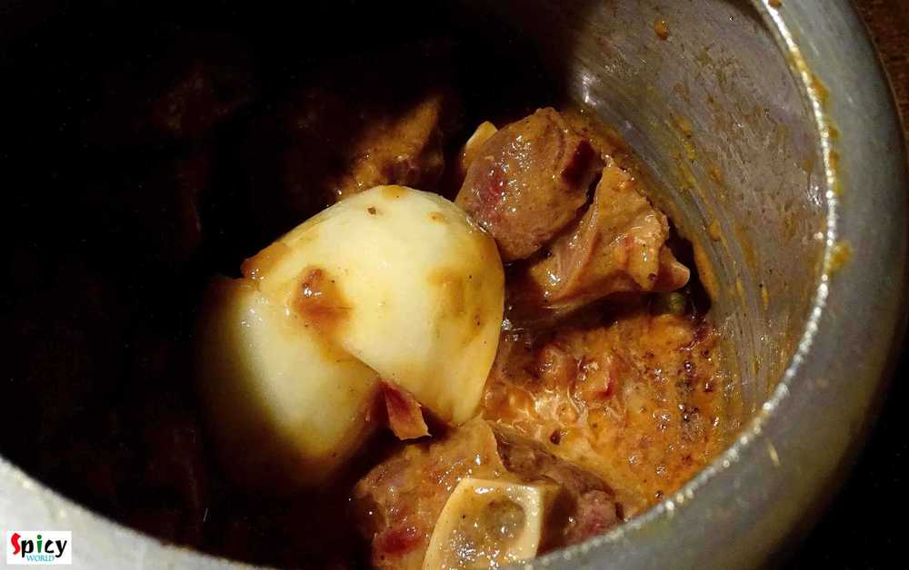
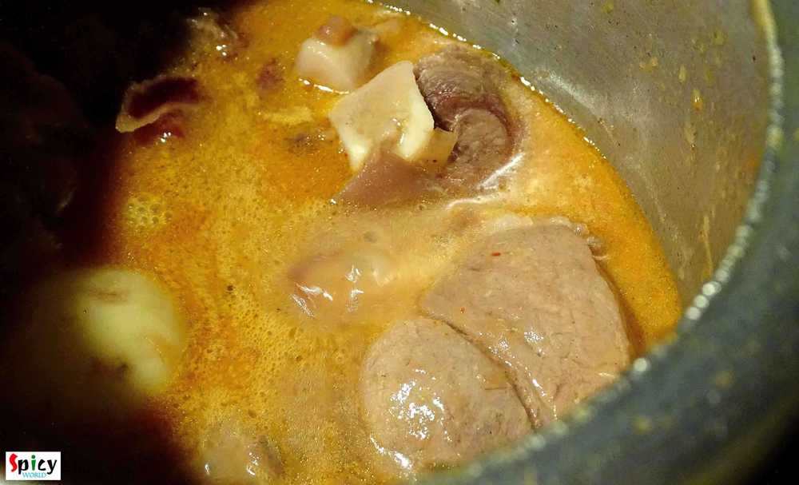
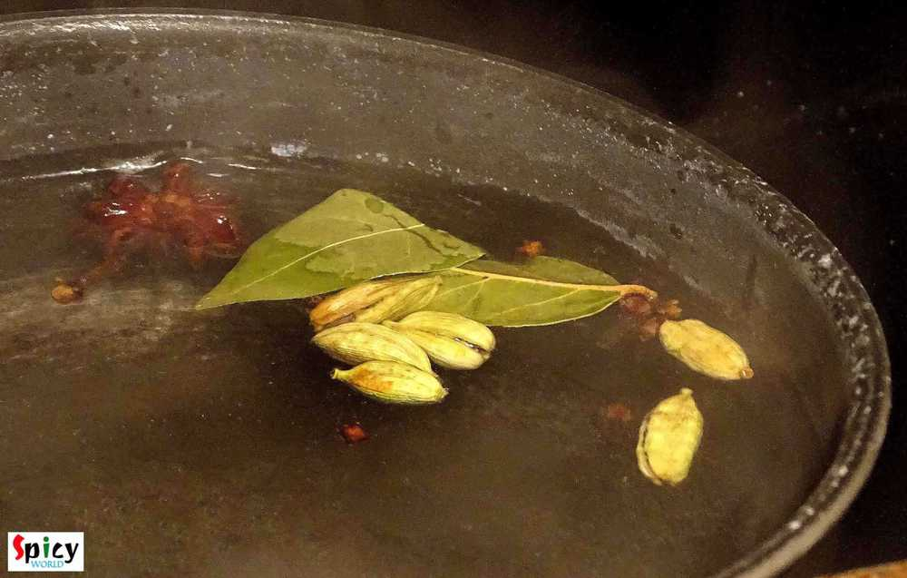
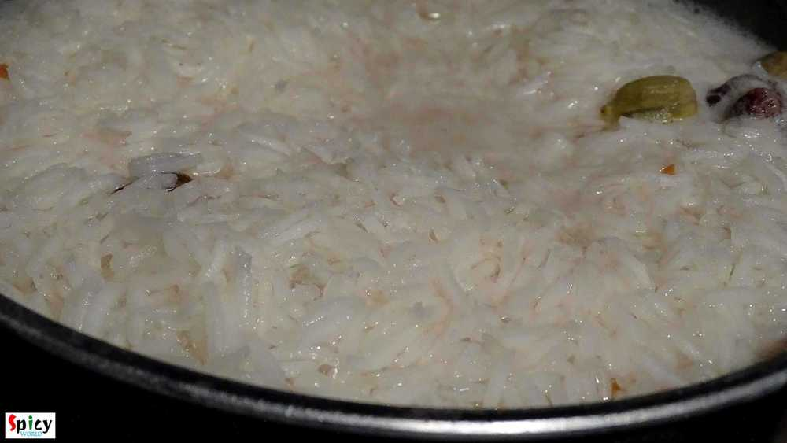
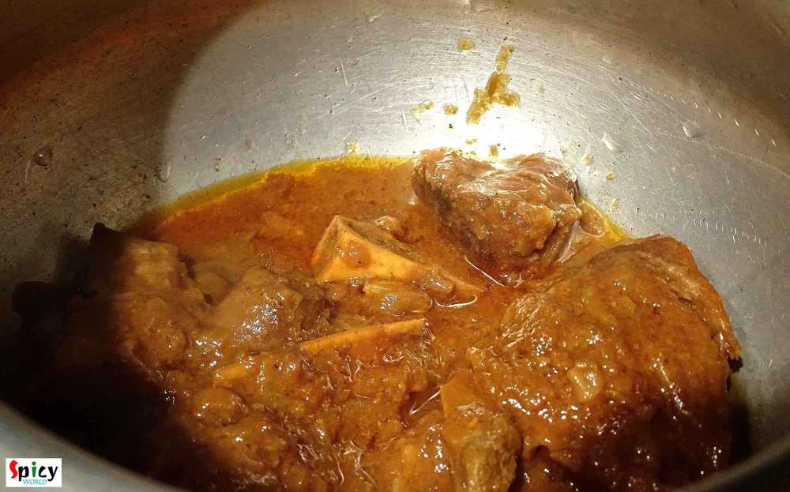
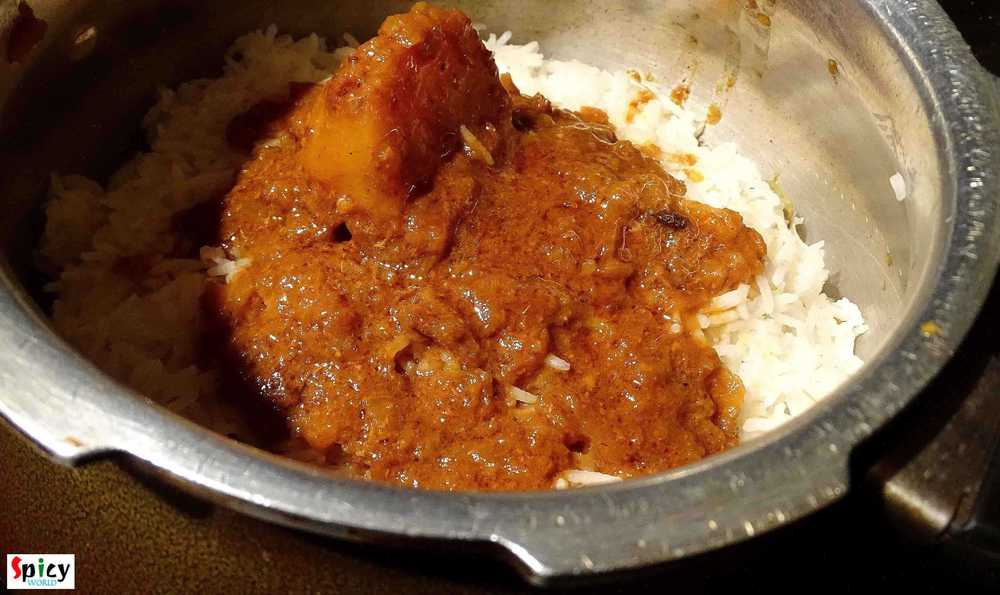
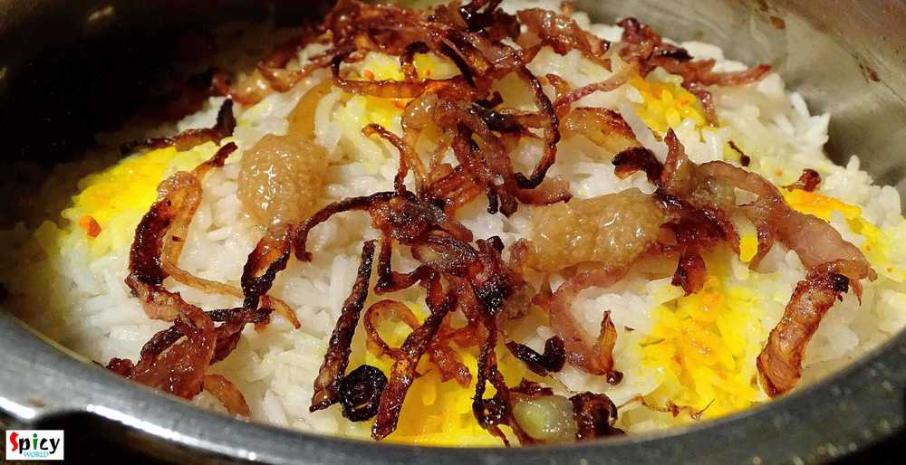

Simple and Easy Recipes
Mutton Biriyani
© 2016 Spicy World, Published on: Dec 19, 2015
You always have a grand feeling whenever you prnounce the name 'mutton biriyani'. I mean really I need to describe this? It become the most popular indian dish among the world. Biriyani has its own aroma, juicy meat and long grain flavourful rice. But in Kolkata they add boiled potato and egg in their biriyani which makes you more greedy:-) I know that the process is lenthy but believe me you will fall in love with the end result.

Ingredients
- Mutton medium size 6-8 pieces.
- Basmati rice 2 cups.
- Two small potatoes.
- One onion sliced.
- Ginger and garlic paste 2 Teaspoons.
- Curd 4 Teaspoons.
- 1 Teaspoons red chilli powder.
- Biriyani masala 4 Teaspoons.( from any indian store).
- Cumin seed 1 Teaspoons.
- Green cardemom 5.
- Six cloves.
- One star anis.
- One small cinnamon stick.
- Yellow food colour / few saffron strands.
- Clarified butter/ghee 7 Teaspoons.
- half Teaspoon rose water / kewra water.
- Salt and sugar.
- Water.

Steps
Marinate the mutton pieces with curd and 1 Teaspoon ginger and garlic paste for 3 hours.
Take a cooker. Heat 4 Teaspoons ghee.
Add sliced onion. Fry it till golden brown.
Then add 1 Teaspoon ginger and garlic paste, biriyani masala and red chilli powder. Mix it.
Shake off the marination and add the mutton pieces. Mix it well for 5 minutes.
Then add all the marination, salt and pinch of sugar. Mix again for 4 minutes.
Then add potatoes. Mix it well.
Now add some luke warm water and pressure this until potato and Mutton pieces are 90% done.
Do not make it too much runny or dry. Make some thick gravy.
Turn off the gas.
Now wash the basmati rice in cold water very well.
Boil some water with cumin seeds, green cardemom, cloves, cinnamon stick, star anis and 4 Teaspoons salt.
Add the rice in boiling water. Chech the rice every two minutes.
When the rice 80% done drain the water.
Now take vessel. Dont turn on the gas. Put 1 Teaspoon ghee.
Then put a layer of mutton with gravy.
Then a layer of rice. Repeat the process twice.
Add 3 Teaspoons ghee, some fried onion, rose water and pinch of food colour on top of the rice.
Cover the vessel with a very tight lid. Turn on the gas and keep the vessel on gas for 20 minutes in medium flame.
Then turn off the gas and keep it uncover for another 10 minutes. After that open the vessel.
Your mutton biriyani is ready .... Enjoy ...!!
Serve hot with raita, gravy or any type of curry.
")